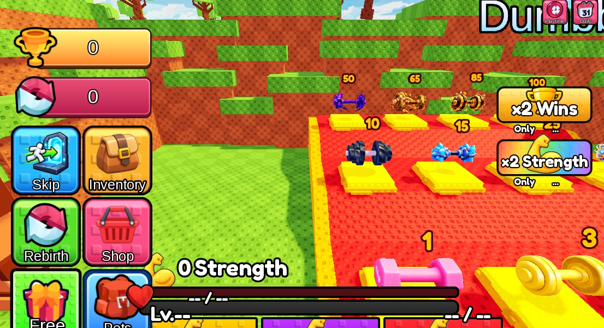
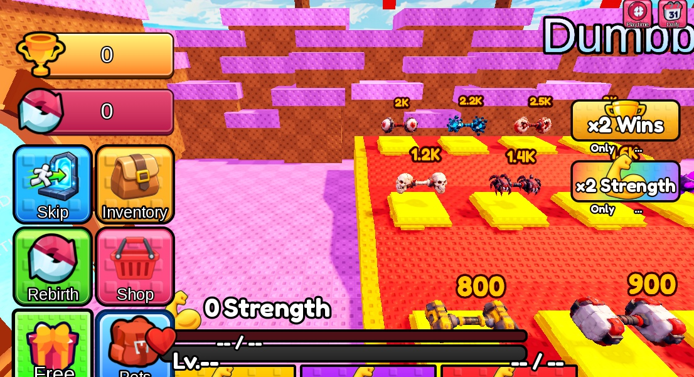

2026-11-17。副本PlaceId 126576845524886／UniverseId 10765181857。基準commit 1032306と現在の未保存Studio編集を照合して変更。
ユーザー追補により、Owned／Equipped／Step to buy・Win価格・アイコンを非表示にし、両Worldの全24設備を数値だけに統一。表示用Instanceは残し、既存参照の待機問題を避けた。購入・装備の内部状態、装備中の台座色、加算値、モデルの大きさ・高さは変更していない。
数字はDumbbellLabelStyle.SizeMultiplier=2。数値専用NumericScale.Scale=2で縦横2倍に描画し、キャンバスも9×2.25→18×4.5 studsへ拡張。文字の論理領域とMaxTextSize=64を維持してから拡大する。UITextSizeConstraintは最大100で制限されるため、単に64→128とする方法は使用しない。ラベルの中心を上げて表示域を確保し、設備本体は動かしていない。フォント・色・K/M表記は維持。
ReplicatedStorage.Config.DumbbellLabelStyleReplicatedStorage.Modules.DumbbellStandPresentationServerScriptService.Services.World1DumbbellVisualsStarterPlayer.StarterPlayerScripts.Services.DumbbellStandClientReplicatedStorage.DumbbellStandBillboardTemplateWorkspace.PerStepButtons.1～12.BillboardGuiWorkspace.World2Map.TrainingArea.DumbbellDisplays.PerStepButtons.1～12.BillboardGui手動調整はDumbbellLabelStyle.SizeMultiplier。字体・色・縁取りも同じConfig。再適用用tools/ApplyRightHudWalkwayPresentation.luauも更新。


変更した6 Luauファイルのコンパイル、git diff --check、報告書の画像・リンクを確認。最終照合でも4 Sourceとエディターバッファが一致し、24台の表示と221パーツの配置・サイズを維持。
全対象のFull Pathと確認結果。今回分のみ通常commit／origin/mainへpush。commit IDは完了回答に記載。